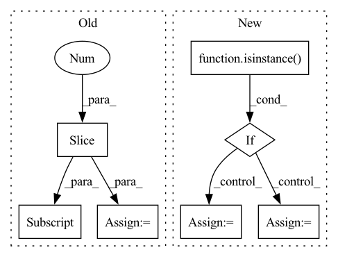

Pattern ID :16184
Before Change
if node.op == "call_function" and node.target == torch.einsum:
// Get shapes:
try:
shapes = [a.shape for a in node.args[1:] ]
except AttributeError:
warnings.warn(
f"einsum {repr(node)} lacked shape information; "After Change
) -> torch.nn.Module:
if isinstance( model, fx.GraphModule) :
graph: fx.Graph = model.graph
else:
tracer: fx.Tracer = tracer_class()
graph: fx.Graph = tracer.trace(model)
model = tracer.root
out_mod = fx.GraphModule(model, graph)In pattern: SUPERPATTERN
Frequency: 3
Non-data size: 7
Instances Fragment ID: 54088281
Project Name: linux-cpp-lisp/opt_einsum_fx
Commit Name: 1f0a34a7fbb639d1fbb2d09cb33fe49effef90e9
Time: 2021-03-07
Author: 1473644+Linux-cpp-lisp@users.noreply.github.com
File Name: opt_einsum_fx/_opt_ein.py
M Class Name: AnonimousClass
N Class Name: AnonimousClass
M Method Name: optimize_einsums(3)
N Method Name: optimize_einsums(1)
M Parent Class:
N Parent Class:
M File Name: opt_einsum_fx/_opt_ein.py
N File Name: opt_einsum_fx/_opt_ein.py
M Start Line: 12
M End Line: 70
N Start Line: 13
N End Line: 31
Before Change
lengths = all_lengths + torch.rand((ray_num, point_num)).to(target_device) * resolution
// sampled coords is (col_id, col_id)
if output_samples:
ray_raw = torch.sum(torch.cat([sampled_coords / focal, -torch.ones(sampled_coords.shape[0], 1, dtype = torch.float32).to(target_device)], dim = -1).unsqueeze(-2) * cam_tf[:, :-1] , dim = -1)
pts = cam_tf[:, -1] + ray_raw[:, None, :] * lengths[:, :, None]
return torch.cat((pts, ray_raw.unsqueeze(-2).repeat(1, point_num, 1)), dim = -1), lengths, output_rgb, torch.cat((cam_tf[:, -1].unsqueeze(0).repeat(ray_raw.shape[0], 1), ray_raw), dim = -1)
ray_raw = torch.sum(torch.cat([(sampled_coords) / focal, -torch.ones(sampled_coords.shape[0], 1, dtype = torch.float32).to(target_device)], dim = -1).unsqueeze(-2) * cam_tf[:, :-1], dim = -1)After Change
indices = torch.randint(0, max_id, (ray_num,)).to(target_device)
output_rgb = rgbs[indices]
sampled_coords = coords[indices].to(torch.float32) + 0.5 // shift half pixel
if isinstance( focal, Iterable) :
sampled_coords[..., 0] /= focal[1]
sampled_coords[..., 1] /= focal[0]
else:
sampled_coords /= focal
// sampled coords is (col_id, col_id)
ray_raw = torch.sum(torch.cat([sampled_coords, -torch.ones(sampled_coords.shape[0], 1, dtype = torch.float32).to(target_device)], dim = -1).unsqueeze(-2) * cam_tf[:, :-1], dim = -1)
if output_samples: Fragment ID: 54088255
Project Name: enigmatisms/nerf
Commit Name: 6540170a567b47e4c9f65c604c10931ad96d9be5
Time: 2022-07-10
Author: 984041003@qq.com
File Name: py/utils.py
M Class Name: AnonimousClass
N Class Name: AnonimousClass
M Method Name: validSampler(9)
N Method Name: validSampler(11)
M Parent Class:
N Parent Class:
M File Name: py/utils.py
N File Name: py/utils.py
M Start Line: 69
M End Line: 85
N Start Line: 73
N End Line: 90
Before Change
np.random.shuffle(dataset)
length = len(dataset)
prop = [1.0 / self.client_num for _ in range(self.client_num)]
prop = (np.cumsum(prop) * length).astype(int)[:-1]
data_list = np.split(dataset, prop)
data_list = [x.tolist() for x in data_list]
return data_list
After Change
index = [x for x in range(length)]
np.random.shuffle(index)
idx_slice = np.split_array(dataset, self.client_num)
if isinstance( dataset, Dataset) :
data_list = [Subset(dataset, idxs) for idxs in idx_slice]
else:
data_list = [[dataset[idx] for idx in idxs] for idxs in idx_slice]
return data_list
Fragment ID: 54088275
Project Name: alibaba/federatedscope
Commit Name: a8049e064eba8c6110681bd35d20d0e50c3f5110
Time: 2022-12-06
Author: 18007356109@163.com
File Name: federatedscope/core/splitters/generic/iid_splitter.py
M Class Name: IIDSplitter
N Class Name: IIDSplitter
M Method Name: __call__(3)
N Method Name: __call__(3)
M Parent Class: BaseSplitter
N Parent Class: BaseSplitter
M File Name: federatedscope/core/splitters/generic/iid_splitter.py
N File Name: federatedscope/core/splitters/generic/iid_splitter.py
M Start Line: 17
M End Line: 23
N Start Line: 19
N End Line: 27